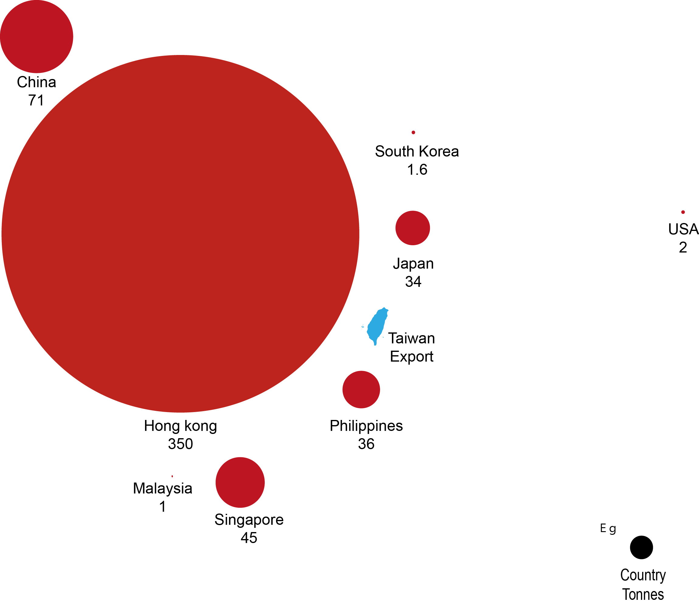
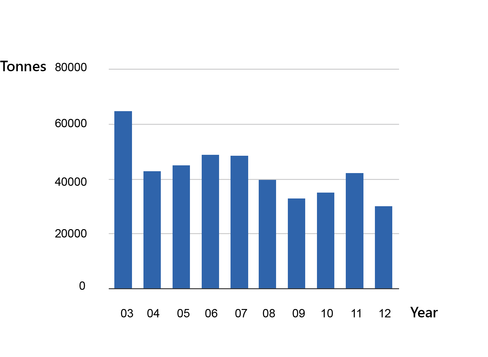
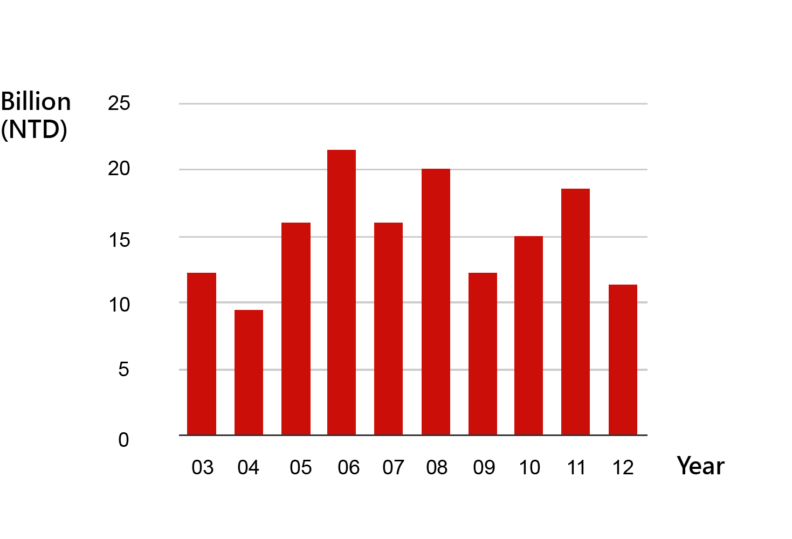
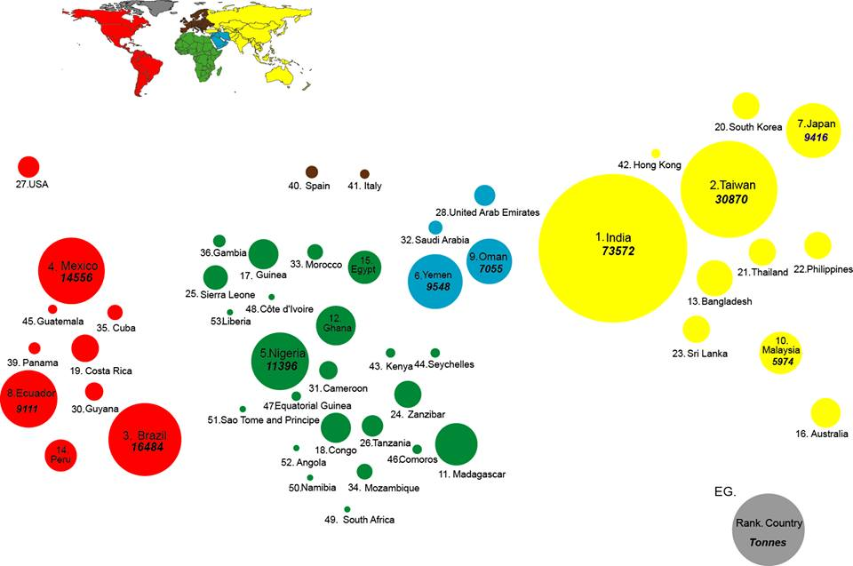
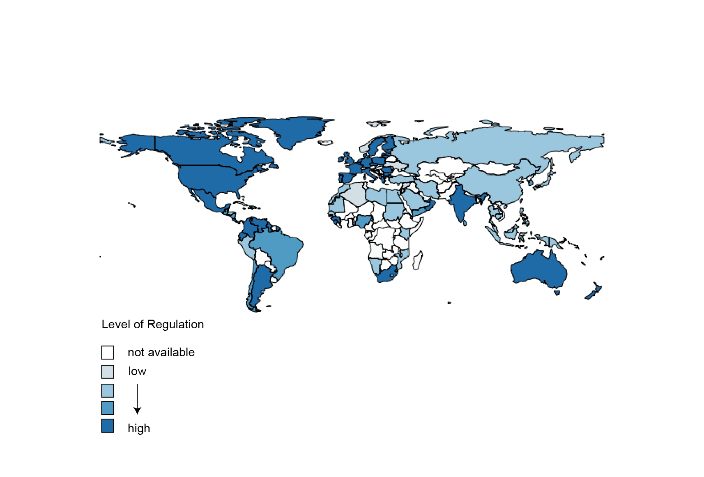

This november,Taiwan’s researcher Jhen, Jhao-Lun and the society of wilderness collaborate on a shark research, which is post on the international journal PLOS ONE. This research group found that more than 90% of the shark Taiwanese consume are on the endangered list of IUCN. From our report, you can tell that people in Asia love eating shark fin soup, while Taiwan is the fishing power compare to the world. These overfishing motions make sharks go on a further step toward extinction.
According to available data from Taiwan’s fisheries agency, The amount of shark fin export to Hong kong reach 350 tonnes, which is the biggest export partnership with Taiwan. No.2 is China and No.3 is Singapore. Also, most of the countries are around east and south Asia. The circles below represent the actual amount Taiwan export. The bigger the circles, the greater the Tonnes.
Source:2012 Taiwan fishery statistic yearbook, Taiwan Fishery Agency
According to FAO statistics, Taiwan has become the top 5 shark catching nations. In 2003, Taiwan has caught almost 65,000 tonnes sharks and earned millions, based on Taiwan Fishery Agency statistics. The following charts show the quantity of shark catching as well as profits gained in Taiwan from 2003 to 2012. Being a major shark catching nation, Taiwan receives a lot of pressure from conservation parties.
2003-2012 shark catching capacity in Taiwan
2003-2012 profits gained from shark catching in Taiwan
Source: 2003-2012 Taiwan fishery statistic yearbook, Taiwan Fishery Agency
FAO data show that in year 2011, the global shark fishing capacity is 256,355 tonnes. From the map below we can tell that Asia, Africa and Latin America are the main continents of fishing, and most of them are developing countries. The top ten fishing nations are India, Taiwan, Brazil, Mexico, Nigeria, Yemen, Japan, Ecuador, Oman and Malaysia.
Source: FAO Fisheries and Aquaculture Department, Pew Environment Group (2012),CBC News
International conservation groups and scientists have warned that overfishing of sharks has threatened the marine environments. The amount of shark breeding are much lesser than the amount of catching every year. Due to the pressure in these years, the main shark catching nations have started to develop regulatory measures to protect sharks. The following map shows the latest measures of top 20 shark catching nations in 2011. Different color stands for different levels of measures, from low level to high level. In 2012, Taiwan announced the shark finning ban, which means shark must be landed with fins naturally attached. In the following chart, we can see the shark catching quantity has reduced in 2012, yet the policy need further examination.
Source: FAO Fisheries and Aquaculture Department, Pew Environment Group (2012),CBC News